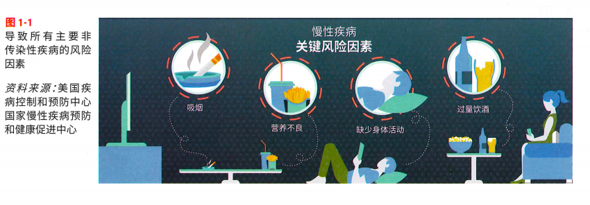

本章内容
学习目标
1. 理解教练与客户四大合作阶段的递进逻辑
2. 掌握每个阶段的核心任务与沟通技能要求
3. 学会运用同理心建立默契关系
4. 掌握积极倾听与动机式访谈技巧
5. 熟练运用SMART原则设定目标
6. 理解学习三阶段与三类型，提升教学效果
重点内容
● ✅ 四大阶段名称与顺序：建立默契 → 探讨 → 计划 → 行动
● ✅ 同理心定义：设身处地为客户着想，换位思考
● ✅ 动机式访谈四项核心精神：合作、接纳、关怀与唤出
● ✅ OARS四大技巧：开放式问题、肯定认可、印证式倾听、内容总结
● ✅ SMART原则：具体、可测量、可实现、相关、有时限
● ✅ 学习三阶段：认知阶段、联想阶段、自主阶段
● ✅ 学习三类型：视觉型、听觉型、动觉型
● ✅ 三明治法则：先肯定→再纠错→后鼓励
本章核心
教练与客户的合作如同学会一首舞曲——从建立默契的初次相识，到探讨信息的深入了解，到计划方案的协同共创，再到行动阶段的教学落地，四个阶段循序渐进、环环相扣，默契关系贯穿始终。
本章知识结构
| 阶段 | 关键字 | 核心任务 | 沟通技能要求 | 阶段产出 |
|---|---|---|---|---|
| 建立默契 | 信任 | 建立双向信任与理解 | 同理心、文化素养、非语言沟通 | 客户愿意继续合作 |
| 探讨阶段 | 倾听 | 收集客户信息 | 积极倾听、动机式访谈 | 完整的健康史问卷 |
| 计划阶段 | 合作 | 共同制定训练方案 | 目标设定、SMART原则 | 个性化训练计划 |
| 行动阶段 | 教学 | 执行训练方案 | 教学技巧、反馈技能 | 客户掌握动作技能 |
关键数字
| 数字 | 含义 | 应用场景 |
|---|---|---|
| 4 | 四大合作阶段 | 本章核心框架 |
| 3 | 三种学习类型 | 视觉型、听觉型、动觉型 |
| 3 | 三个学习阶段 | 认知阶段、联想阶段、自主阶段 |
| 4 | OARS四大技巧 | 开放式问题、肯定认可、印证式倾听、内容总结 |
| 4 | MI四大要素 | 协作、认同、同情、唤出 |
| 5 | SMART原则五要素 | 具体、可测量、可实现、相关、有时限 |
名词与缩写
| 缩写 | 全称 | 中文含义 |
|---|---|---|
| MI | Motivational Interviewing | 动机式访谈 |
| OARS | Open questions, Affirmations, Reflections, Summaries | 开放式问题、肯定认可、印证式倾听、内容总结 |
| SMART | Specific, Measurable, Attainable, Relevant, Time-bound | 目标设定五原则 |
| TTM | Transtheoretical Model | 跨理论模型/行为改变阶段模型 |
一图速记

学习路线
第一步：理解框架 → 四大阶段的递进关系 ↓第二步：掌握第一阶段 → 建立默契（同理心、文化素养、非语言沟通） ↓第三步：深入第二阶段 → 探讨阶段（积极倾听、动机式访谈） ↓第四步：实战第三阶段 → 计划阶段（SMART原则、目标设定） ↓第五步：落地第四阶段 → 行动阶段（教学技巧、反馈方法） ↓第六步：综合运用 → 四个阶段的连贯与协同
一位新客户第一次来到健身房，表达出"我对运动一窍不通，怕被人笑话"的顾虑。请思考：你应该处于哪个合作阶段？运用本章学习的哪些技能来应对？
选择题
Q：以下关于四大合作阶段的描述，正确的是？
A. 四个阶段是有助于组织合作过程的框架，实际工作中可根据客户情况往返调整
B. 建立默契只发生在初次见面，之后就不重要了
C. 探讨阶段的核心是倾听和收集信息
D. 计划阶段可以由教练单方面制定，客户只需执行
答案：C
章节总述
ACE教材第四章核心内容，聚焦私人教练与客户合作的四大关系阶段。学习本章内容，能够帮助教练清晰判定与客户当下所处的合作阶段，并依据阶段核心要求，完成对应工作内容，匹配专属沟通方式与服务逻辑。
教练与客户的四大合作阶段依次为：建立默契、探讨、计划、行动。
该相处逻辑适用于所有人际交往，如同日常交友、恋爱的相处规律。
~~• 建立默契：合作初期，教练与客户初次相识的阶段；
● 探讨阶段：制定训练计划之前，全面采集客户个人信息的阶段；
● 计划阶段：正式开展训练前，定制专属运动方案的筹备阶段；
● 行动阶段：训练方案落地执行，开展实操教学的阶段。~~（详见下表）
四个阶段对于教练的沟通技能要求各有差异：
1. 建立默契阶段：核心为理解与信任；
2. 探讨阶段：核心为主动倾听，全面收集信息；
3. 计划阶段：核心为双向合作，共同制定训练方案；
4. 行动阶段：核心为教学技能，高效开展实操指导。
且默契关系（信任和理解）并非只存在于初期，会全程贯穿探讨、计划、行动三大后续阶段，是长期合作的基础。

默契贯穿始终，探讨收集信息，计划共创方案，行动教学落地
●
● 类比：四大阶段就像恋爱的四个阶段：先是互相有好感（建立默契），然后深入了解对方（探讨），接着规划未来（计划），最后步入正轨（行动）
●
要点：默契是贯穿整个合作关系的"氧气"，需要持续供给
向新学员介绍四大阶段
❌ ：
• "我们今天先填个表，然后我给你做个计划，之后开始训练"
• 冷漠地按流程走，不解释原因
✓ ：
• "我会先和你聊聊，了解你的想法和顾虑，然后我们一起制定适合你的训练方案，最后开始实际练习"
• 让客户了解整个合作流程，建立预期
1 建立默契关系阶段
关键字：贯穿教学关系始终的信任与理解
一、默契关系核心定义
默契关系，是私人教练主动与客户搭建起来的双向信任与理解，是一切训练合作的前提与根基。
默契是根基，信任是桥梁，理解是钥匙
●
● 类比：默契关系就像建筑的地基（看不见但最重要，决定了上层建筑能盖多高）
●
要点：没有默契，所有的专业技能都是空中楼阁
初次与客户见面
❌ ：
• 直接开始讲解专业知识、展示自己多厉害
• 表现得像在完成销售任务
✓ ：
• 先花5分钟聊聊客户为什么来、有什么顾虑
• 表现出对客户的真诚兴趣
二、建立默契的核心：同理心
同理心区别于同情心，同理心是教练能够站在客户角度理解其想法、感受和经历，并以此调整沟通方式。
需要说明的是，教练永远无法百分之百体会客户的真实感受，但只要我们愿意站在客户视角共情，就能快速拉近关系，建立良好沟通基础。
现实中，教练常常难以理解：为何客户无法坚持运动，连简单的基础动作都难以完成。因为每个人都有不擅长的领域，如同教练会因为"坚持运动"而难以理解学员的无法坚持，但是教练们可以回忆和假想一下自己学习英语，高等数学，所体验到的困难和难以长期坚持，面对老师觉得轻而易举自己却觉得难如天书的语法知识、微积分 方程式，理解困难、学习吃力的感受，或许便能理解普通会员在学习运动、掌握动作、克服身体短板时的难处与压力。同理心的并非简单的来自于“善良”，教练自身的经历，经验，以及观察视角，都非常关键。
同情站着看，同理蹲下来
●
● 类比：同情心是"我在岸上看溺水的人"，同理心是"我跳进水里感受水的温度"
●
要点：同理心不是"我理解你"，而是"我想象我在你的处境中"
客户抱怨动作太难想放弃
❌ ：
• "这动作很简单啊，你怎么学不会？"
• "你不努力怎么会有效果？"
✓ ：
• "我能理解这个动作确实有难度，让我回忆一下我当初学这个动作时的感受……"
• "我当初学高等数学时也是这种感觉，我懂你的挫折感。我们可以把它拆解成更小的步骤。"
：
• ⚠️把同理心当成同情心（居高临下的"我理解你"）
• ⚠️过度共情，变成在说自己（"我当年也是这样的"）
• ⚠️假装理解，实际在想着怎么给建议
为何同理心如此困难？
教练作为运动专家，在专业领域具有"知识诅咒"——我们的大脑已经自动化处理运动信息，而客户的大脑还在挣扎于最基础的动作。当教练说"深蹲时重心在足中点"，客户关心的是"恐惧、关节脆响、怕练粗腿，重心是什么？"。我们难以跳出自己的视角去理解他人。
教练的突破方法：
1. 强制自己停顿3秒，用"如果我是刚加完班、体能很差的人……"来模拟客户视角
2. 主动确认："听起来你现在担心的是……对吗？"
1.1 建立默契关系的核心要素

1.1.1 文化素养
文化素养不等同于学历，其核心定义为：拥有与不同年龄、性别、种族、民族、体型、社会经济状况、教育背景、运动能力、身体素质的人群，建立信任、高效沟通的综合能力。
多数人会本能倾向于和自身相似、观念契合的人交流，而专业私人教练，必须具备和各类差异化客户沟通相处的能力。
注意：年龄最不影响坚持度
● 实操要求：主动花时间了解客户的信仰、处事态度、价值观；
● 核心禁忌：摒弃主观偏见与刻板印象；
● 常见刻板偏见举例：默认老年人身体虚弱、肥胖人群懒惰、口音较重人群素养偏低、协调性差的学员学习能力弱、沟通方式不同的客户难以相处等；
● 负面影响：一旦被刻板印象与主观预判束缚，便无法客观了解客户，难以制定合理训练方案，直接阻碍默契关系建立。
文化素养不是学历，是与谁都能聊得来的能力
●
● 类比：文化素养就像调味料（能让不同的"食材"变成美味的"菜肴"）
●
要点：能和大家认为"最难搞"的客户打交道，是专业素质的体现
面对不同类型的客户
❌ ：
• 对年长客户："您这个年纪，能动一动就很好了"
• 对肥胖客户："您就是吃太多动太少"
• 对年轻客户："年轻人恢复快，可以加大强度"
✓ ：
• 了解每位客户的个人价值观和目标，而不是套用刻板印象
• 主动询问："您对这次训练的期望是什么？有什么特别关心的吗？"
刻板印象自检清单：
☐ "年纪大的客户学不会新动作"
☐ "胖客户都是因为懒"
☐ "女性客户不需要练力量"
☐ "年轻客户恢复快，可以加大强度"
☐ "有运动基础的客户不需要详细讲解"
1.1.2 第一印象
第一印象是默契关系的开端，也是初次合作的关键契机。
教练在初次接触客户时，展现出专业的职业素养、礼貌尊重的处事态度、清晰流畅的沟通能力，能够提升客户的舒适感与好感度，为长期合作奠定基础。
提示：第一印象开启是一段关系的“钥匙”
● 类比：第一印象就像书的封面（决定别人有没有兴趣翻开内容）
● 要点：专业形象是信任的"入门票"
第一印象检查清单：
☐ 仪容仪表干净整洁
☐ 准时到达约定的会面地点
☐ 主动自我介绍，态度热情但不油腻
☐ 眼神交流自然，避免飘忽或紧盯
☐ 语速适中，避免太快显得急躁
☐ 倾听时身体微微前倾，表现出专注
1.1.3 言语和非言语沟通
沟通分为语言沟通与非语言沟通两大板块，在表达情绪、态度和建立关系时，非语言沟通会显著影响客户对教练的感受。
● 语言沟通：仅指代语言文字本身的内容；
● 非语言沟通：包含声音质量、眼神交流、面部表情、手势动作、身体姿态与位置。
说什么固然重要，怎么说更重要（在表达情感和态度时，非语言信号的影响力可能超过语言内容）
● 类比：非语言沟通就像音乐的伴奏（歌词一样，伴奏不同，感觉完全不同）
●
要点：客户很多时候对你说话时的样子，比你说了什么记得更清楚
（1）声音质量
声音质量属于非语言沟通范畴，交谈时音量需适中，避免过高或过低；等流行不适配教练职业场景的发声习惯。
教练可通过录音、录像、AI模拟对话的方式，反复练习，优化自身发声与表达状态。
声音是教练的"乐器"，需要调校才能演奏出好听的曲子
●
● 类比：教练的声音质量就像餐厅的背景音乐（太吵让人烦躁，太轻让人听不清）
●
要点：清晰、友善、稳定的音量是你的"标准配置"
日常与客户沟通
❌ ：
• 声音过高显得有攻击性，或过低显得没自信
• 语速过快，客户跟不上你的节奏
✓ ：
• 保持适中的音量，比正常对话稍大一点
• 语速适中，给客户消化信息的时间
• 练习方法：录下自己与客户的对话，回听并改进
（2）眼神交流
与客户沟通时，保持直视、温和友好，避免直勾勾紧盯对方；全程专心专注、心无旁骛，正视交流对象。
眼神是心灵的窗户，别把你的窗户关上了
●
● 类比：眼神交流就像跳舞（需要你来我往，而不是一方盯着另一方）
●
要点：温和的注视=尊重+关注；直勾勾的盯视=压力+不适
倾听客户表达时
❌ ：
• 眼神飘忽，看向别处或看手机
• 直勾勾盯着客户，让对方感到压力
✓ ：
• 保持自然的眉眼微笑，温和注视
• 偶尔点头，表示在认真倾听
（3）面部表情
保持真诚自然的面部状态，拒绝刻意假笑、假意礼貌。客户能够敏锐察觉虚假的态度，真诚是沟通的核心关键。
真诚是“必杀技”
● 类比：面部表情是教练的"情绪翻译器"（翻译得真不真，客户感受得到）
●
要点：真诚的表情比完美的表演更有力量
面对客户的不同情绪表达
❌ ：
• 客户沮丧时，自己表情轻松
• 客户兴奋时，自己面无表情
✓ ：
• 让自己的表情与客户的情绪产生共鸣
• 真诚地表达关心和支持
（4）手势动作
倾听客户表达时，双手保持相对静止，避免随意摆动肢体、摇晃身体、指指点点等失礼行为。
手势太多=不自信，手势适当=有活力，完全没有=太僵硬
●
● 类比：手势就像说话时的"标点符号"（适当停顿有力量，太多反而干扰理解）
●
要点：倾听时，双手静止；表达时，手势辅助
与客户对话中
❌ ：
• 双手乱动，显得紧张
• 用手指点客户，显得有攻击性
• 交叉双臂，显得有防备
✓ ：
• 双手自然放松在身体两侧或放在桌上
• 适度使用手势辅助表达
• 倾听时保持双手相对静止
（5）身体姿态
杜绝含胸驼背，该姿态容易传递出疲惫、厌烦的负面情绪；避免双手叉腰、身体僵硬，易产生挑衅感与距离感。
日常沟通保持开放、舒展的身体姿态，也可适度模仿客户的肢体姿态，营造轻松舒适的交流氛围。

身体是情绪的扩音器（驼背放大疲惫，舒展放大自信）
●
● 类比：身体姿态就像你的"个人品牌logo"（站立姿势代表你的专业形象）
●
要点：开放舒展=欢迎靠近，封闭僵硬=请保持距离
初次见面的站姿/坐姿
❌ ：
• 含胸驼背，显得疲惫
• 双手叉腰，显得有攻击性
• 身体后仰，显得傲慢
✓ ：
• 站立时双脚与肩同宽，重心稳定
• 坐姿时背部挺直但不僵硬
• 适度模仿客户的姿态（镜像效应），拉近距离
1.1.4 专业界限
教练与客户之间必须保持清晰的边界感，维持纯粹的职业合作关系。
● 关系禁忌与核心原则：若与客户发展为亲密好友、恋爱关系，会丧失教学客观性，无法开展标准化专业指导；若双方产生恋爱关系，需立即终止教学合作；尽责不私，人际关系越亲近，越难维持训练教学的秩序与专业性。
● 私下沟通边界：尊重客户个人习惯，区分客户偏好，适配文字、语音、微信、邮件等不同沟通方式，全程保持职业分寸。
专业界限就像"球场边线"（踩线一时爽，踩完哨声响）
● 类比：教练和客户的关系就像医生和病人（太熟了就难"下手"了）
要点：保持专业距离不是冷漠，是为了让教学更客观
与客户发展出超出工作关系的感觉时
❌ ：
• 假装没发现，继续正常教学
• 觉得客户"应该不会吧"，回避处理
✓ ：
• 如果感觉不对劲，及时与店长或主管沟通
• 必要时转介绍给其他教练
• 记住：恋爱关系必须立即终止合作
日常边界检查：
☐ 与客户的沟通保持职业化
☐ 不在非工作时间频繁联系客户
☐ 不在社交媒体上与客户过于亲密互动
☐ 了解健身房关于师生关系的规定
1.2 与难以合作的客户打交道
1. 困难客户核心成因
沟通不顺畅、配合度低、抵触情绪强的困难客户，大多源于过往负面经历：曾有运动受伤史、糟糕的健身体验，因此对运动训练、私人教练存在固有偏见，初期信任度不足。
困难客户不是"要搞事"，而是"有故事"
●
● 类比：困难客户就像受过伤的小动物（不是不想靠近你，是曾经被伤害过）
●
要点：客户的抵触背后，往往藏着恐惧和伤痛
面对不配合的客户
❌ ：
• "你怎么这么不配合？"
• 表现出不耐烦或沮丧
✓ ：
• 理解抵触背后可能有过去的负面经历
• 保持耐心，给客户适应的时间
• 用专业能力一点点建立信任
2. 核心应对原则
全程保持同理心，持续输出专业能力，耐心接纳客户的抵触情绪。
同理心+专业能力+耐心=困难客户的解药
要点：面对困难客户，你的气场决定客户的反应
3. 落地解决方法
1. 精准提问引导：主动询问客户抵触的核心卡点、想要深入了解的内容；
2. 挖掘核心诉求：探寻客户对运动的真实看法，了解其心中运动的阻碍、运动的优势与顾虑；
3. 专业客观解答：依托专业知识，针对性解答客户的疑问与担忧；
4. 强化客户信任：分享同类问题客户的成功改善案例，即替代经验；结合自身专业资质、从业背景，提升客户自我效能，逐步建立信任。
问清楚→挖诉求→答专业→建信任
●
● 类比：这四个步骤就像"解锁手机"（一步步输入密码，才能打开心门）
●
要点：没有建立信任之前，所有的专业建议都是空话
客户表示"我以前也请过私教，没什么用"
❌ ：
• "那是那个教练不行，我不一样"
• 立刻开始证明自己的能力
✓ ：
• "能理解，您之前一定有不愉快的经历。能和我说说是什么问题吗？"
• 了解客户的过去经历，再针对性地展示你能提供的不同价值
4. 阶段禁忌
在默契建立阶段，严肃说教、强行纠正客户观念、争辩反驳都毫无意义。教练需放下偏见，以了解、倾听、接纳为核心，客观看待客户的所有想法与顾虑。
建立默契阶段（少说多听，像个记者而不是老师）
要点：在这个阶段，你的首要任务是"听"，而不是"教"
阶段禁忌清单：
❌ 避免行为：
• 严肃说教："你应该……"
• 强行纠正："你的想法不对……"
• 争辩反驳："不是这样的……"
• 急于给建议
✓ 正确态度：
• 了解 > 纠正
• 倾听 > 说服
• 接纳 > 评判
• 引导 > 强迫
✍️小节回顾 | 第一阶段：建立默契关系
基本原理
建立默契是整个合作关系的前提。教练需运用同理心理解客户，以专业形象赢得信任，以真诚态度建立连接。注意警惕刻板印象、保持专业界限、耐心应对困难客户。
互动考题
Q：一位客户说"我之前请的私教总是推销课程，我不太相信你们了"，你应该怎么回应？
参考答案：
• 首先共情："我能理解您的顾虑，被推销的感觉确实不舒服"
• 然后了解："能告诉我之前是什么情况吗？"
• 最后展示不同："我在这里会专注帮您解决问题，而不是推销课程"
记忆小本
| 要素 | 关键词 | 一句话 |
|---|---|---|
| 核心 | 同理心 | 设身处地，不是居高临下 |
| 素养 | 文化素养 | 能与任何人建立信任 |
| 形象 | 第一印象 | 专业、礼貌、清晰 |
| 沟通 | 非语言 | 在情感态度传递场景中，非语言信号影响显著 |
| 界限 | 专业边界 | 恋爱关系立即终止 |
2 探讨阶段
关键字"听"
本板块主题：探讨阶段
探讨阶段的定义：这是私人教练与客户初步接触后，收集客户隐私信息（医疗、健康、运动史等）、了解客户内心见解、建立深入默契关系的基石阶段。
重点内容：
1. 听什么：收集信息
2. 怎么听：积极倾听技巧
3. 怎么交谈：动机式访谈 (Motivational Interviewing, MI) 的要素与技巧
4. 困难时刻如何交谈：会员交谈中透露出个人困境时的交谈技巧
唯有让客户建立安全感，主动提供有效信息，才能为后续个性化训练计划制定，提供极大支撑与便利。
探讨阶段的核心在于"听"
● 类比：探讨阶段就像医生问诊（问得越清楚，诊断越准确）
要点：在这个阶段，教练的嘴要"懒"，耳朵要"勤"
2.1 收集信息
明确倾听的核心内容，由教练指导客户填写生活方式与健康史问卷，全方位梳理客户信息。


通过结合表格我们需要了解如下信息
1. 当下现状
了解客户目前的健康状态、体能水平；个人运动喜好与排斥项，以及选择运动、抗拒运动的底层原因。
了解现状是"拍照"，了解客户现在的样子
2. 过往经历
梳理客户过往运动史，区分能够助力长期坚持运动的正向因素，以及阻碍运动执行的负面因素，过往运动计划中可坚持或失败的原因；明确有效执行部分与失效问题所在
了解过去是"查地图"，看客户走过哪些路、哪些路上有坑
要点：重复过去的成功，避免过去的失败
3. 运动好恶
掌握客户运动习惯偏好，如晨间运动或晚间运动、独自训练或结伴训练以此深度理解客户个体特质。
了解好恶是"配钥匙"，找到打开客户心门的正确钥匙
要点：让客户做喜欢的事，更容易坚持
收集信息时的提问技巧
❌ ：
• "你平时运动吗？"（简单的是非问，无法获取深度信息）
• "你有没有病史？"（冰冷的问法，让客户有压力）
✓ ：
• 开放式问题："你能和我聊聊你对运动的看法吗？"
• 先建立安全感："我问你这些问题，是为了更好地帮助你，这些信息我们会保密的"
• 追问细节："你提到之前尝试过运动，能说说那次经历吗？是什么让你停止的？"
2.2 积极倾听
积极倾听是教练必备核心能力，贯穿客户沟通全流程。
1. 基础环境要求
沟通环境保持安静、私密，营造舒适的交流氛围。
2. 核心心态要求
全程保持同理心，换位思考，深入了解客户全貌，为后续给出合理有效建议打下基础。
3. 行业普遍短板
私人教练在未接受过系统沟通训练时，可能存在表达欲过强、随意打断客户表述的问题。导致和客户的默契关系破裂。积极倾听，需要高度专注力与专业沟通技巧。
积极倾听 = 全神贯注 + 不打断 + 记重点
● 类比：积极倾听就像"调频"（调到客户的频道，才能接收到他的信号）
要点：听是为了理解，不是为了准备回应
客户在说话时
❌ ：
• 客户还没说完就插嘴："你说的我懂……"
• 眼神飘忽，在想下一句怎么回
• 假装在听，实际上在刷手机
✓ ：
• 保持眼神接触，微微点头
• 记录关键信息（不是用手机，是用脑子或笔记本）
• 等客户说完再回应
• 安静，真诚，避免"爹"味
4. 积极倾听行为准则
切勿假装倾听，刻意敷衍会被客户察觉，既会遗漏关键信息，也会降低客户信任；不要提前构思回话内容，更不要思绪游离、精神涣散。
我们要将自己定位为专业的信息收集者，围绕前文梳理的倾听核心内容，主动引导客户表达，系统梳理、整合有效信息。
假装倾听三秒钟，客户能感受十分钟
要点：真诚是最好的倾听技巧
积极倾听检查清单：
☐ 手机静音或放在一边
☐ 身体面向客户，微微前倾
☐ 不打断客户
☐ 用点头、"嗯"等反馈表示在听
☐ 客户说完后，复述确认关键信息
☐ 不提前构思回话
2.3 动机式访谈
日常沟通中，常有一类客户：因家人、医生催促被动运动，自身运动意愿薄弱，对于是否开启训练充满矛盾。即便清楚运动的各项益处，依旧难以付诸行动。
面对此类人群，不能强硬催促、单向说服，这时就需要用到动机式访谈。
动机式访谈最初专为成瘾行为矫正、心理干预场景设计，适用于人们面临高难度、高挑战的行为改变场景，完全适配健身教练的工作场景，且与行为改变模型TTM中思考阶段高度契合。
动机式访谈 = 引导，不是说服
● 类比：动机式访谈就像“点燃火种”，帮助客户发现自身改变动力。
要点：让人改变的永远是他自己的动机，而非外部的道理
面对犹豫不决的客户
❌ ：
• "你应该运动，对身体好"
• "你看你这体重，不运动怎么行"
• "我这是为你好，你怎么不听"
✓ ：
• "运动对你来说意味着什么？"
• "你身边有没有通过运动改变很大的人？"
• "如果有一天你开始运动了，你希望自己的生活有什么不同？"
（一）动机式访谈核心逻辑
传统沟通模式中，教练如同手握方向盘，直接告知客户该做什么、怎么做，属于指令式沟通；但真正能长久践行的选择，往往是自我主观决定的结果。他人强行要求的事，很难长期坚持；
动机式访谈为引导式沟通，不直接灌输结论、下达指令，依托默契的信任关系，通过鼓励、支持与正向协助，循序渐进引导客户自主思考。
我们可以思考：动机式访谈的核心理念：对抗式沟通、强硬说教、道德绑架、专制灌输，大多毫无作用。健身教练普遍缺乏该板块专业学习，也是日常客户沟通中普遍缺失的关键能力。
指令式 = 推车，推一下动一下；引导式 = 铺路，让客户自己跑起来
要点：强推无效，引导才有效
无效预警：别成为你最讨厌的人
❌ 禁用方式：
• 对抗式沟通："你不运动就会怎样怎样"
• 强硬说教："你应该/必须/不得不"
• 道德绑架："你都花了钱，不练对不起谁"
• 专制灌输："听我的没错"
✓ 正确方式：
• 提问引导
• 协作解决
• 肯定支持
（二）动机式访谈核心框架
1. 四项核心精神：合作、接纳、关怀与唤出
● 协作：教练与客户是双向共舞的合作关系。客户是训练计划的最终执行者，必须全程参与方案制定与沟通。一旦客户丧失主体意识，完全依赖教练，不仅沟通效率低下，教学推进也会举步维艰。
● 接纳：教练保持同理心与尊重，承认客户的个体差异和自主选择，不以自己的价值观评判或强迫客户。
● 关怀（compassion）：以客户的福祉为出发点，理解其处境和困难，避免把教练本人的价值观强加给客户。这里的compassion强调积极关怀，不等同于居高临下的怜悯。
● 唤出：引导客户自主说出改变的想法与诉求，而非直接告知答案、强行灌输理念。过度指点与说教，只会引发抵触心理。

合作是共同工作，接纳是尊重自主选择，关怀是以客户福祉为先，唤出是引导客户说出自己的改变理由。
● 类比：四大要素就像"四轮驱动"（四个轮子一起转，车才能跑起来）
要点：动机式访谈以合作、接纳、关怀和唤出为基础，通过沟通帮助客户明确自己的改变理由与方向。
四大要素自检：
协作检查：
☐ 我是在问问题让客户思考，不是在给答案
☐ 客户有参与对话，不是只听我说
认同检查：
☐ 我尊重客户的价值观和选择
☐ 我没有评判客户的犹豫
同情检查：
☐ 我站在客户的角度思考
☐ 我没有把自己的想法强加给客户
唤出检查：
☐ 改变的想法来自客户自己
☐ 我没有直接告诉客户应该怎么做
2. 四大核心技巧：OARS
即开放式问题(Open questions)、肯定认可(Affirmations)、印证式倾听(Reflections)、内容总结(Summaries)。
● 开放式问题：不设置简单是非类问答，提问需要引导客户输出详细内容，从中挖掘高价值信息。
开放式问题 = 问答题，封闭式问题 = 是非题
● 类比：开放式问题是"打开的门"，封闭式问题是"关上的门"
要点：多问"什么"和"怎么"，少问"是不是"
开放式 vs 封闭式对比：
❌ 封闭式（避免）：
• "你今天感觉怎么样？"（是/否回答）
• "你有运动习惯吗？"（是/否回答）
• "你确定要开始训练吗？"（是/否回答）
✓ 开放式（推荐）：
• "你今天感觉怎么样？能和我多说说吗？"
• "你能告诉我你之前尝试运动时的经历吗？"
• "对于开始训练，你心里在想什么？"
● 肯定认可：关注客户行为的积极面，给予正向肯定。摒弃"打着为你好"的打压式沟通，避免负面否定，保护客户自我认同感。
肯定认可 = 给客户"加油"，不是"泼冷水"
要点：客户需要被鼓励，不被否定
客户分享了尝试运动但失败的经历
❌ 错误回应：
• "那你为什么没坚持下来？"
• "失败了你还想再试？"
✓ 正确回应：
• "我注意到你之前有尝试过，这说明你有想要改变的心"
• "你已经迈出了第一步，这需要勇气"
● 印证式倾听：单一连续提问会形成审讯感，容易引发反感。提问后，及时复述、梳理、确认客户的表述内容，让客户感受到被理解、被尊重。
印证式倾听 = "我听到了+我理解了"
● 类比：印证式倾听就像"回声"（你说，我重复确认）
要点：复述让客户感到"你真的在听"
印证式倾听话术示例：
客户说："我之前请过私教，但感觉他总是很忙，每次课都匆匆忙忙的，我问的问题也没时间回答……"
印证回应："听起来，你之前有过一次不太愉快的私教体验（教练太忙，没有给你足够的关注和解答。这让你对教练有了更高的期待，也更谨慎了）。对吗？"
● 内容总结：沟通尾声，整合多段印证内容，对整场对话信息进行归纳梳理，统一核心共识。
总结 = 收尾 + 确认 + 共识
要点：好的总结让客户感觉"被理解了"
总结话术示例：
"让我们来梳理一下今天聊的内容：你之前有过不愉快的私教经历，所以现在更看重教练的关注度；你希望在减重的同时，不影响日常工作；你每天早上有时间运动，但担心强度太大。坚持方面你之前失败过，主要是因为目标太激进。我们今天的发现，对你接下来制定计划会有帮助。"


（三）动机式访谈执行步骤
第一步，建立默契与信任关系；
第二步，逐步引导客户锁定一个或多个改变目标；
第三步，深度诱发动机，激发客户自主改变的内在意愿，引导客户主动表达改变需求；
第四步，结合诉求，共同制定专属执行计划。
MI四步 = 建信任→定目标→诱动机→定计划
要点：动机源于客户自身，教练的作用是唤出
（四）访谈核心价值与教练认知
动机式访谈是教练的高阶必备技能，能够让客户获得尊重感。很多教练习惯直接输出专业知识、给出训练建议，看似高效，实则欲速则不达。
单纯分享专业知识，是沟通中的"偷懒行为"。合格的教练，需要刻意克制自我表达欲与分享欲，耐心引导会员自主表达诉求、梳理想法，帮助客户重塑主体意识，这也是推动客户长期坚持改变的关键。因此，教练需主动深耕学习沟通技巧。
给答案 --“偷懒”，引导思考 --“专业”
要点：最省事可能是最无效的
2.4 对难以处理的披露的回应
沟通中可能出现伤病、人生变故、情绪困扰或其他难以处理的披露。教练应在同理回应的同时判断信息是否涉及即时安全、医疗或心理健康风险，并按执业范围采取相应措施。
1. 同理回应：专注倾听，反映客户的感受和重点，不以好奇心追问无关细节。若涉及即时危险、自伤他伤风险或需要专业评估的问题，应优先采取安全措施并转介。
2. 确认下一步：在客户愿意且安全风险已得到妥善处理的前提下，再将沟通平稳带回运动目标。超出教练执业范围的问题应由合资格专业人员接手。
补充转介原则：若客户存在严重基础疾病、重大医学隐患、重度情绪问题、饮食失调、抑郁症等特殊情况，教练不可擅自干预，需及时做好专业转介，规避风险。
负面信息处理 = 共情+简短+转话题+必要时转介
要点：教练是健身专家，不是心理医生
负面信息应对话术：
客户说："我最近离婚了，真的没心情运动……"
❌ 错误回应：
• "那更要运动啊，运动能改善心情！"
• "我理解你，我也有这种情况……"（变成在说你自己）
• "那你今天先休息吧"（过度照顾，放任客户逃避）
✓ 正确回应：
• "我能理解这种感受一定很不容易……（共情停顿）如果你愿意的话，我们可以先从很轻松的内容开始，不用给自己太大压力。你觉得呢？"
为何动机式访谈对教练如此困难？
教练具备专业知识，因此很容易直接给出答案。然而，单向说教可能引发抵触，也不利于客户建立自主动机。动机式访谈强调唤出客户自身的改变语句，再在获得允许后提供相关信息或建议。
教练的突破方法：
1. 刻意练习"闭嘴"：问完问题后，忍住不给建议
2. 把"给建议"改成"问问题"
3. 记住：客户的改变动机，是他自己的，不是你给的
✍️小节回顾 | 第二阶段：探讨阶段
基本原理
探讨阶段的核心是"听"和"引导"。教练通过积极倾听收集信息，通过动机式访谈引导客户自主思考和表达。改变的动力来自客户内心，教练负责激发而非推动。
互动考题
Q：一位客户说"我知道运动好，但是我就是懒得动"，请使用动机式访谈技巧设计一段沟通。
参考答案：
• 开放式问题："你能和我说说'懒得动'具体是什么感觉吗？"
• 肯定："我注意到你其实知道运动好，这说明你对健康是有关注的"
• 印证倾听："听起来，你不是不想运动，而是找不到动力，对吗？"
• 唤出："如果有一天你开始想动了，你希望生活会有什么不同？"
记忆小本
| 概念 | 关键词 | 一句话 |
|---|---|---|
| 积极倾听 | 专注+不打断 | 假装倾听会被识破 |
| 动机式访谈 | 引导+协作 | 动机源于客户自身，教练负责唤出 |
| OARS | 问+肯+听+总 | 开放式、肯定、印证、总结 |
| MI四要素 | 协作、认同、同情、唤出 | 四轮驱动缺一不可 |
| 负面信息 | 共情+转话题 | 教练不是心理医生 |
3 计划阶段
完成信息采集后，正式进入计划阶段，此时客户即将准备开启训练。
本阶段核心为双向合作，教练不可单方面制定训练方案，需与客户充分沟通、协同配合，结合客户的身体基础、目标诉求、接受程度，共同定制个性化、可落地、适配性强的运动训练计划，保障计划的合理性与执行性。
计划阶段是承上启下的关键阶段，衔接前期沟通准备与后期正式行动。在这一阶段，教练可发挥更积极的作用，但积极性需建立在持续倾听、主动获取客户意见、与客户共同设计计划的基础上。核心要求是，计划需由教练与客户协同完成，以此提升客户的计划坚持度，为后续行动落地奠定基础。
计划阶段 = 双向共舞，不是独角戏
● 类比：计划就像恋爱中的人开始策划婚姻（不能只有一方说了算）
要点：客户参与制定的计划，才是客户愿意执行的计划
计划阶段的核心步骤
计划阶段主要包含四个核心步骤，依次为：设定目标、讨论备选方案、制定计划、评估计划。各步骤环环相扣，需结合客户实际情况灵活推进。

3.1 设定目标
设定目标是行为改变的核心过程，也是所有计划的核心组成部分，直接影响客户的行动动力与坚持度。设定目标需遵循以下五个核心要点：
1. 避免目标过多，聚焦核心目标，避免多目标分散精力，影响执行效果；
2. 避免设定负向目标，以正向引导为主，引导客户树立积极的行动导向；
3. 短期目标与长期目标相结合，让客户在每次锻炼中都能实现短期小目标，积累成功体验，逐步向长期目标推进；
4. 引导客户主动参与目标设定，充分尊重客户意愿，最大化实现理想效果；
5. 定期重审目标，这是提升客户坚持度的关键，目标需根据客户实际情况动态调整，确保其合理性与可行性。
目标设定五要点：不多、不丧、长短结合、双方定、定期审
要点：好目标是灯塔，照亮方向；坏目标是枷锁，压垮动力
帮助客户设定目标
❌ ：
• "你的目标是什么？减重？好，那就每天跑步1小时"
• 设定的目标太多，一次性全压给客户
✓ ：
• 问清楚背后的原因："减重是为了什么？是为了健康，还是为了穿衣服好看？"
• 一次聚焦1-2个核心目标
• 设定正向目标："每周完成3次30分钟的中等强度运动"而不是"不要偷懒"
目标设定理论
一个有效的目标能带来好的4个正向结果
心理学家Advanelok与Gary Lanthom的研究表明，有效的目标设定通过四个核心机制提高个体的行为，这为教练开展目标设定工作提供了理论支撑：
1. 引导注意力：目标能让个体在特定时期聚焦核心任务，并预留固定时间用于与训练相关的活动，避免精力分散；
2. 激发动力：具有适度挑战性的目标，短期内可有效激发个体的努力程度，提升行动积极性；
3. 提升坚持度：明确的目标能让个体在追求目标的过程中保持更久的行动力，减少半途而废的情况；
4. 促进策略优化：目标会驱动客户主动探索实现目标的有效策略与方法，提升目标达成效率。
目标四作用：引注意力、激动力、提坚持、促优化
要点：目标就像GPS（没它不知道往哪走，有它会知道每一步对不对）
个体差异
个体差异会影响目标作用的发挥效果。在与客户设定目标时，需重点关注以下五类个体差异，确保目标设定的针对性：
1. 目标投入度：客户对目标的投入程度越高，目标的激励作用越显著（可结合第二章自我决定理论理解）；
2. 目标重要性：客户认为目标越重要，其受到的激励效果越强，行动的主动性也越高；
3. 自我效能：即个体对自身能否达成目标的信念度，信念度越高，个体的坚持性越强，目标的激励作用越明显；
4. 反馈机制：能及时获取目标进展反馈的客户，更易持续追求目标，因此私教在训练期间，可通过定期检查进度、借助穿戴设备等方式，帮助客户实现自我监控；
5. 任务复杂性：任务难度越高，客户越需要多元策略支撑，此时教练可与客户协作，同时建立过程目标与结果目标（又称成绩目标），实现目标设定的科学性与艺术性结合。
个体差异五维度：投入度、重要感、自我效、反馈、任务难
要点：同样的目标，对不同人的激励效果不同
目标设定的核心原则：SMART原则
SMART原则是目标设定的核心原则，包含五个维度，即具体（Specific）、可测量（Measurable）、可实现（Attainable）、相关（Relevant）、有时限（Time-bound），具体要求如下：
1. 具体性：目标需清晰明确，避免模糊化表述，例如避免"明年成为更好的人"这类无法落地的目标，需明确具体行为与方向；
2. 可测量性：目标需可追踪、可量化，便于判断进展情况，需注意，衣服尺寸因品牌、款式标准不同，不属于可测量指标；
3. 可实现性：目标需贴合现实，确保在客户能力范围内可达成，避免设定过高或过低的目标；
4. 相关性：目标需与客户的个人兴趣、实际需求及自身能力高度相关，避免出现"教练苦心制定计划，客户却不愿执行"的情况，核心原因往往是计划与客户需求脱节；
5. 时限性：目标需明确预计完成期限，为定期监测进展提供依据，避免无时限目标导致执行拖沓。
SMART原则（S具体、M可测、A可实现、R相关、T有时限
● 类比：SMART目标就像精确的导航（起点、终点、路线、时间都清清楚楚）
要点：模糊目标=许愿，SMART目标=承诺
SMART目标示例：
❌ 模糊目标：
• "我要变瘦一点"（不具体、不可测量）
• "我想更有力量"（模糊）
• "我尽量多运动"（没有时限）
• "我要变得健康"（无法衡量）
✓ SMART目标：
Specific：减重5kg
Measurable：体重变化
Attainable：12周合理
Relevant：符合客户目标
Time-bound：12周
• "未来12周，通过每周3次力量训练，使体重下降5kg。"（具体、可测量、有时限、符合客户目标、可实现）
• "12周后能够完成连续10个标准俯卧撑"（具体、可测量、可实现、有时限）
【注意】 衣服尺寸不属于可测量指标！
【实践建议】
初期目标可适度保守，尤其在与客户合作初期、客户处于行为改变的早期阶段。远大目标虽能鼓舞人心，但一旦遭遇挫折，易让客户产生失望情绪，因此，让客户在目标推进过程中持续获得"获得感"至关重要。同时，需结合过程目标与结果目标：过程目标聚焦客户的具体行动，例如每周完成150分钟有氧训练、每天10分钟身体活动度改善；结果目标聚焦行动带来的实际成果，例如减脂重量、力量提升幅度，两者结合可全面保障目标落地。
过程目标=做行为，结果目标=看成果，两个都要有
要点：没有过程目标，结果目标就是空谈

3.2 产生想法并讨论选择
明确目标后，教练进入与客户讨论想法、筛选备选方案的环节，这个阶段的核心原则是：每位客户的最终目标应是长期坚持运动，而非单纯激发短期运动热情。
在第二章中我们提出：时间不足是客户退出运动最常见原因之一。若客户有因时间问题退出运动的过往经历，教练应引导其接受适度的运动计划：若客户设定的目标过于宏大，需投入大量时间与精力才能实现，结合其过往经历，需对目标进行合理调整与管理。相较于"宏大但无法执行"的计划，经过科学调整的计划更具可靠性与长效性。
计划设计需结合客户合作周期，体现差异化：若客户仅计划短期合作，运动计划应设计得简洁易懂、便于客户独立执行；若为长期维护，计划可适当复杂化，提升针对性与持续性。
因此，教练需根据客户的购买需求与训练需求，灵活制定差异化的训练计划与目标。
在与客户共同制定评估方案时，应鼓励客户自主判断计划的可行性，重点考量时间分配的合理性。待双方充分讨论、达成共识后，进入计划制定环节。
备选方案 = 给选择，不是给命令
要点：客户参与选择的方案，才会认真执行
讨论训练方案选项
❌ ：
• "你的计划是这样的：每周一三五训练……"
• 不给客户选择的机会
✓ ：
• "我们可以有两个方案：方案A是每周3次，适合时间充裕的你；方案B是每周2次，适合工作较忙，并且希望有更多休息休闲时间。你觉得哪个更适合？"
• 鼓励客户说出顾虑："你之前说过时间是个问题，那你觉得哪个方案更现实？"
3.3 制订计划
制定计划是计划阶段的核心执行环节，需遵循两大核心要点，确保计划的可行性与客户的接受度：
一是保障客户的自主权，客户最了解自身的目标、需求与运动偏好，计划制定需充分尊重客户意愿，双方达成一致后，可将计划形成书面形式，增强仪式感与执行力，便于后续落地与监测；
二是帮助客户做好运动准备，教练可提供针对性建议，例如训练时的着装、所需装备，譬如：未来两周的主要训练区域，该区域固定器械的使用方法、场地礼仪及良好训练习惯等。这些建议能帮助客户快速适应健身环境，减少陌生感与尴尬感。健身房对教练而言是熟悉场景，但对新人而言，可能存在尴尬甚至畏惧心理，因此，帮助客户熟悉环境、提供关键指导，是提升客户体验、保障计划执行的重要环节。
计划两要点（给自主权，帮“预热”）
要点：书面计划更有仪式感，也更容易执行
帮助客户做好运动准备
❌ ：
• 假设客户知道健身房怎么用
• 直接开始训练，不管客户是否准备好
✓ ：
• "我们先花10分钟熟悉一下器械，你会感觉更自在"
• 介绍训练区域的使用方法
• 说明基本的健身房礼仪
3.4 评估运动计划
计划制定后，并非一成不变，需在课程开展期间定期评估、动态调整，确保计划贴合客户实际情况，保障目标落地。
评估核心是判断目标进展速度（过快或过慢），并根据评估结果及时调整训练计划。若客户的计划坚持度下降，需及时排查原因（如目标难度过高、时间分配不合理等）并优化计划。评估重点主要包括两个方面：
1. 计划的挑战性：判断目标设定过高或过低，确保挑战性与客户能力匹配，既不过于轻松导致动力不足，也不过于困难导致挫折感；
2. 客户的坚持度：针对坚持度过低的情况，精准定位原因并解决，例如调整目标难度、优化时间分配、强化正向激励等。
计划写在沙子上，需要随时调整
要点：定期评估是计划成功的保障
评估计划话术：
"我们已经执行了两周计划，我想和你一起回顾一下进展。你觉得这个强度怎么样？有没有觉得太累或者太轻松？"
为何双向合作比单方面制定更有效？
1. 承诺一致性：人们更愿意执行自己参与制定的计划
2. 信息完整性：客户了解自己的实际情况，教练了解专业知识，两者结合才完整
3. 责任感：当客户参与制定计划，他会觉得自己对计划有责任，而不是"教练强加的"
4. 适配性提升：客户能预判时间、精力等现实约束，帮助教练制定更贴合实际的方案
✍️小节回顾 | 第三阶段：计划阶段
基本原理
计划阶段的核心是"双向合作"。教练角色为引导者和专业顾问，非命令者。SMART原则是目标设定标准，需让客户参与目标设定，使计划成为双方共识。
互动考题
Q：一位客户说"我的目标是一年瘦50斤，每周只能训练2次，每次1小时"，请分析这个目标的SMART原则适用情况，并帮助客户优化目标设定。
参考答案：
• 分析："目标具体但时间紧，需要拆分"
• 优化后："3个月减掉10斤，每周2次训练，每次1小时，包含力量训练和有氧训练。第一个月目标是适应训练节奏，第二个月逐步增加强度。"
记忆小本
| 概念 | 关键词 | 一句话 |
|---|---|---|
| 目标设定 | 五要点 | 不多、不丧、长短合、双方定、定期审 |
| SMART原则 | 五维度 | 具体、可测、可实现、相关、时限 |
| 过程目标 | 做行为 | 每周3次，每次30分钟 |
| 结果目标 | 看成果 | 3个月减10斤 |
| 评估计划 | 调难度、提坚持 | 计划不是死的，要动态调整 |
4 行动阶段
行动阶段是训练方案落地执行的最终环节。
本阶段核心重点为教学技能，专业的教育学能力、动作讲解能力、动作纠错能力、训练引导能力至关重要。教练需依靠标准化教学技巧，指导客户正确完成训练动作，规避运动损伤，循序渐进推进训练目标落地。
行动阶段 = 教+学+练
● 类比：行动阶段就像教练的"主战场"（所有前期的铺垫，都是为了这一刻）
要点：教学技能是教练吃饭的本事，必须扎实
4.1 自我监测
自我监测
自我监测是行动阶段的核心任务之一，也是支持行为改变的最有效方式之一，尤其适用于解决坚持运动、改善饮食这两大世界级难题。教练需引导客户建立完善的自我监测体系，具体可通过以下方式推进：
1. 监测工具与内容：引导客户借助手机应用、专属App或小程序，全面记录训练相关信息，包括抗阻训练的重复次数、强度，心肺训练的时间、强度、心率等核心指标；同时，善用AI工具，不仅实现数字记录，当下教练更要学习通过AI进行数据化分析，帮助客户清晰掌握自身训练进展。
2. 自我监测的核心价值：一方面，能够显著提高客户的自我意识，强化其行动主体性，让客户更清晰地感知自身变化；另一方面，可强化教练与客户之间的沟通，每次教练询问、交流监测记录时，都是开启有效讨论、了解客户需求、优化训练方案的重要契机。
自我监测 = 让自己看见自己的进步
要点：看得见的进步，才是持续的动力
引导客户建立自我监测习惯
❌ ：
• "你回家自己练就行，不用记录"
• 认为记录是客户自己的事
✓ ：
• 推荐适合的App或小程序
• 定期回顾监测数据
• 用数据帮助客户看到进步
4.2 有效的教学技巧
行动阶段中，教练的核心职责之一是向客户传授运动技能、讲解健康知识，需掌握科学有效的教学技巧，确保客户能够正确掌握动作、规范使用器械，同时提升学习效率与行动坚持度。教学过程可分为"学"与"教"两个维度，具体要求如下：

学习的三个阶段
Fitts & Posner（1967）提出，个体学习运动技能的过程通常分为三个阶段，教练需根据不同阶段的特点调整教学策略，具体如下：
1. 认知阶段（Cognitive stage）：此阶段客户的动作表现为不协调、不流畅，对动作要领的理解较为模糊。教练需采用"整体讲解、逐步示范、独立实践"的教学方式，做到言传身教，同时给予客户充足的练习时间。此阶段是教练最费心的阶段，需遵循KISS原则（Keep It Simple and Short，即简洁明了原则），避免教授过多、过复杂的内容，防止给客户造成负担。
2. 联想阶段（Associative stage）：此阶段客户已能完成大部分正确动作，仅存在少量细节偏差。教练的核心任务是提供具体、精准、定向的反馈，避免过量反馈造成客户混乱，重点针对动作偏差进行纠正，帮助客户逐步完善动作技能。
3. 自主阶段：此阶段客户已能流畅、自然、正确地运用各类运动技能。教练的反馈需从外部反馈转向内部反馈，角色从"教学者"转变为"观察者"，同时准备引入新的运动技能，引导客户持续提升。
【注意】 该模型存在一定局限性，不适用于运动员或复杂运动技巧（如滑雪等）的教学。整体而言，这三个阶段可理解为客户从"运动小白"到"熟练掌握技能"的成长过程，教练的教学重点需逐步从详细指导转向定向监督。
学习三阶段：认知期（手忙脚乱）、联想期（逐步稳定）、自主期（形成习惯）
● 类比：学习就像学骑自行车（先是摇摇晃晃，然后慢慢稳定，最后不用想就会骑）
要点：不同阶段用不同的教法，不能一套方法用到底
阶段判断与策略：
认知阶段（判断）：
☐ 动作不协调
☐ 需要看着示范
☐ 记不住动作顺序
策略：多示范、多讲解、多练习、遵循KISS原则（简洁明了）
联想阶段（判断）：
☐ 动作基本正确
☐ 只有细节问题
☐ 能独立完成
策略：定向反馈、纠正细节、避免过量反馈
自主阶段（判断）：
☐ 动作流畅自然
☐ 能自己发现问题
☐ 注意力可放在其他事上
策略：观察者角色、引入新技能、准备进阶
学习三阶段对照表
| 学习阶段 | 客户表现 | 教练策略 |
|---|---|---|
| 认知阶段（认知定向阶段） | 动作不协调、不流畅，对动作要领理解模糊 | 1. 采用"整体讲解、逐步示范、独立实践"方式，做到言传身教；2. 给予充足练习时间；3. 遵循KISS原则（简洁明了），避免教授过多过复杂内容 |
| 联想阶段 | 大部分动作正确，仅存在少量细节偏差 | 提供具体、精准、定向的反馈，重点纠正动作偏差，避免过量反馈造成混乱 |
| 自主阶段 | 能流畅、自然、正确地运用各类运动技能 | 1. 反馈从外部转向内部；2. 角色从"教学者"转变为"观察者"；3. 准备引入新的运动技能 |
5.1.2.2 学习的三种方式
教学中可以结合视觉示范、言语说明和身体实践三种信息通道。客户可能对某种方式表现出偏好，但不应被固定地归类为单一“学习类型”。教练应依据学习任务和客户的实际反应，灵活组合多种教学方式：
1. 视觉型客户：这类客户善于观察，常反馈"我看清楚了""我没看清楚"。针对此类客户，教练的核心策略是"做给他看"，通过规范的动作示范，让客户直观掌握动作要领。
2. 听觉型客户：这类客户喜欢倾听，常反馈"我听到了""我没听到"。针对此类客户，教练的核心策略是"说给他听"，通过清晰、细致的语言讲解，传递动作要领与健康知识。
3. 身体实践：通过分解动作、反复练习、外部提示和客户自身感受，帮助客户理解动作。若需使用触觉提示，必须先征得客户明确同意，说明目的和接触位置，并遵守专业界限。
视觉型：看；听觉型：听；动觉型：摸
● 类比：学习就像吃饭（有人喜欢看菜单，有人喜欢听介绍，有人喜欢先尝一口）
要点：了解客户的学习类型，让教学事半功倍
快速判断学习类型：
• 问"你之前是怎么学的？"
• 观察客户最先问什么："怎么做？"vs"为什么？"vs直接动手试
针对性教学：
• 视觉型：多示范，少说话
• 听觉型：多讲解，多解释
• 动觉型：多给机会实操，手把手引导
学习三类型对照表
| 学习类型 | 客户表现 | 教练策略 |
|---|---|---|
| 视觉型 | 善于观察，常反馈"我看清楚了""我没看清楚" | "做给他看"，通过规范的动作示范，让客户直观掌握动作要领 |
| 听觉型 | 喜欢倾听，常反馈"我听到了""我没听到" | "说给他听"，通过清晰、细致的语言讲解，传递动作要领与健康知识 |
| 动觉型 | 喜欢触摸、实操，常反馈"我感觉到了""我感觉不到" | "手把手指导"，通过手把手教学，让客户在实操中感知动作细节与发力方式 |
核心教学技巧
结合认知阶段的教学要求，教练需掌握以下核心教学技巧，确保教学效果与安全性：
1. （教练）言传身教，（客户）强调练习："言传""身教"是教练的核心职责，而"练习"的主体是客户。教练需明确告知客户，运动技能并非天生，天赋仅影响学习兴趣与基础技能掌握速度，真正的技能提升、成为专家，需要日复一日的持续练习。
教练言传身教，客户勤加练习
要点：技能的提升靠的是练习，不是天赋
1. 讲解清晰，兼顾"是什么、为什么、怎么做"：引入新动作、新技能时，讲解需缓慢、清晰，向客户明确说明"做什么"（动作目标）、"为什么做"（训练意义）、"怎么做"（动作要领），同时重点强调如何有效执行、如何预防损伤。
讲动作 = 是什么（目标）+ 为什么（意义）+ 怎么做（要领）+ 怎么做对（避免损伤）
要点：讲清楚，才能做明白
1. 先整体后细节，避免细节过载：讲解动作时，优先描述动作的整体目标，再逐步补充细节，避免一开始就堆砌大量细节让客户产生困惑。例如，讲解椭圆机使用时，首先强调"以平滑、稳定的速度移动"，再逐步讲解发力细节，而非一开始就强调脚趾抓地、核心绷紧等细节（此类教学方式并非错误，而是效率较低）。
先整体后细节，先框架后填充
要点：细节是加分项，不是开场白
教授新动作
❌ ：
• "首先脚平行与肩同宽，然后屈髋屈膝，膝盖朝向脚尖，核心收紧，脊椎中立……"
• 一次性灌输大量细节
✓ ：
• "先试着做一个完整的深蹲，不用担心细节"
• 观察后："整体不错，现在我们来调整一个关键点：膝盖朝向脚尖方向"
1. 优先强调安全与高效细节：教授动作时，需优先讲解与安全性、目标达成相关的细节，简洁明了地告知客户如何避免损伤、如何高效达成训练目标。例如，高位下拉时，提醒客户避免颈后下拉，减少肩部损伤风险；硬拉时，强调腰部保持相对中立位，预防腰部损伤。
安全第一，效率第二
要点：错误的细节可以慢慢改，受伤了就全完了
1. 提供充足实践机会：讲解与示范完成后，需为客户提供集中的训练机会，教练全程观察，及时提供有用的反馈，帮助客户在实践中巩固动作技能。
听一遍会忘，做三遍才熟
要点：实践出真知
【实操建议】 核心教学技巧的运用需结合客户学习阶段与学习偏好，例如对视觉型客户，可多增加动作示范频次；对动觉型客户，可提前预留实操时间，避免单纯理论讲解，提升教学针对性。
5.1.2.4 反馈的分类与应用
向客户提供反馈是教练的核心任务之一，缺乏反馈会显著降低客户的行动坚持度。反馈主要分为内部反馈与外部反馈，两者协同作用，共同提升客户的训练效果与坚持度：
1. 反馈的分类：外部反馈是教练提供给客户的相关信息，包括强化、纠错与鼓励；内部反馈是客户自身通过听觉、触觉等感觉系统获得的体验与感知。需注意，外部反馈虽能提供直接指导，但决定客户长期坚持度的始终是内部反馈（这与内在动力、外在动力的原理一致，向内的自我感知能更有效地强化客户的行动主体性，提升坚持度，可结合第二章自我决定理论理解）。
外部反馈 = 教练给的，内部反馈 = 客户自己感觉到的
要点：最终让客户靠自己的感觉走，而不是一直靠教练的口哨
外部反馈的有效应用：三明治法则：为提升外部反馈的效果，可采用"三明治法则"，具体流程为：首先，强化客户的良好表现；其次，针对性地纠正客户的动作偏差；最后，激励客户持续练习。将纠错这一相对负面的反馈放在强化与鼓励之间，可减少客户的抵触情绪，提升反馈的接受度。

三明治法则 = 上层（肯定）+ 中层（纠错）+ 下层（鼓励）
● 类比：就像三明治（两片面包夹着酸黄瓜，好吃又健康）
要点：表扬要包着批评说
三明治法则话术示例：
"首先，你今天的深蹲整体节奏很好，保持得很稳定（肯定）。其次，我注意到你下蹲时膝盖有点内扣，这是需要注意的，下次注意膝盖朝向脚尖（纠错）。继续保持这个状态，你会越来越好的（鼓励）！"
1. 纠错的核心要点：一是优先纠正最严重的错误，此类错误通常与动作安全性、动作顺序相关（如动作起始阶段的错误），需第一时间纠正，避免损伤发生；二是采用积极反馈替代消极反馈，例如用"记住保持呼吸"替代"不要憋气"；三是如需与客户进行身体接触纠正动作，需提前征得客户同意。
纠错三要点（先抓安全、用正向说、接触要同意）
要点：纠错是为了帮助，不是为了批评
积极反馈替代消极反馈：
❌ 消极："不要弓背"
✓ 积极："记住挺直胸部"
❌ 消极："别耸肩"
✓ 积极："放松肩膀，让它们自然下垂"
❌ 消极："不要憋气"
✓ 积极："在推起时呼气"
【实操建议】 反馈需控制频率，避免在客户实操过程中频繁打断，可在客户完成一组动作后，集中给出1-2个核心反馈，优先肯定良好表现，再针对性纠错，减少客户抵触情绪。
5.1.3 树立榜样
教练自身的行为表现是影响客户行动的重要因素，树立良好的健康榜样，能显著提升教练的可信度，同时增强客户的行动信心与动力，具体要求如下：
1. 践行健康生活方式：教练自身需保持积极的训练态度与健康的生活习惯，若教练自身消极对待训练、有抽烟、酗酒等不良习惯，会大幅削弱榜样作用，影响客户的信任度与行动意愿。
教练自己都做不到，凭什么让客户做？
要点：榜样的力量是无声的，但效果是巨大的
强化客户的自我效能：教练的榜样行为能为客户提供"替代性经验"（可结合自我效能相关理论理解），让客户意识到"教练工作繁忙、压力大，仍能坚持训练，自己也可以做到"，从而增强行动信心。反之，若教练声称"自己没时间训练"，会让客户质疑"自己再忙也能挤出时间训练"的可行性，丧失行动动力。
教练的状态 = 客户的信心值
要点：你是客户的"可能性证明"
传递积极的运动理念：教练需传递"运动是为了提升舒适感、减轻压力、改善身体状态"的积极理念，而非单纯为了保持身材而进行过量运动或导致饮食失调。通过自身践行，让客户感受到运动的多元益处，而非仅关注力量提升、体脂减少。
运动是为了更好的生活，不是为了痛苦地活着
要点：让客户享受运动，而不是忍受运动
【实操建议】 教练可在日常沟通中，自然分享自身的运动体验与健康收获，避免刻意说教，让客户潜移默化接受积极的运动理念，增强榜样的感染力。
5.1.4 行为合约
行为合约是一种著名的行为矫正策略，可用于辅助客户开启行动，具体实施要点如下：
1. 合约核心：与客户签订行为合约，明确约定训练目标、执行计划，同时设置合理的奖励机制，当客户达成约定目标时，给予相应奖励。
行为合约 = 承诺 + 奖励
要点：让承诺看得见，让奖励摸得着
1. 注意事项：外在激励（合约奖励）可有效帮助客户启动运动，但研究表明，长期坚持运动的人，核心动力来自内在激励。因此，行为合约更适用于刚开始训练的客户，帮助其建立行动习惯；同时，合约中的目标设定不宜过高（可回顾前文目标设定的相关要求），奖励需贴合客户的个人需求，确保对客户具有实际意义。
行为合约是"启动器"，不是"永动机"
要点：奖励是引子，内在动力才是根本
行为合约范本
行为合约范本 (时间) (频率)_ (运动量) 本人有多大信心会这样做?--分为1至10级,1表示完全没有信心,10表示完 全有信心) 如果截至_本人成功完成了这一积极生活方式的改变,本人会奖励自己 如果本人未能成功完成这一积极生活方式的改变,将失去这种奖励。 本人, ,已审阅了该合约并且本人同意在 与 讨论完成或未完成该 健康行为改善过程中的体验。 签名(客户): 签名(私人教练):)
【实操建议】 行为合约可采用书面形式，明确双方权利与约定，奖励可选择非物质奖励（如运动计划优化、额外指导时间），避免过度依赖物质奖励，逐步引导客户建立内在动力。
为何教学技能是教练的核心能力？
不管前面三个阶段做得多好，如果在行动阶段无法有效教学，客户学不会动作、产生挫败感、坚持不下去，一切努力都会白费。教学技能是教练"最后一公里"的能力，决定了客户能否真正从训练中获益。
✍️小节回顾 | 第四阶段：行动阶段
基本原理
行动阶段的核心是"教学"。教练需理解学习三阶段和三类型，采用差异化教学策略。反馈遵循三明治法则，同时引导客户建立自我监测能力。教练自身也是教学工具，榜样力量影响客户的信心和坚持度。
互动考题
Q：一位客户在认知阶段总是记不住动作细节，作为教练你会如何调整教学策略？
参考答案：
• 判断原因：是视觉型？听觉型？还是动觉型？
• 视觉型：增加示范次数，让客户多看
• 听觉型：换一种讲解方式，用不同的比喻
• 动觉型：手把手引导，让客户多感受
记忆小本
| 概念 | 关键词 | 一句话 |
|---|---|---|
| 学习三阶段 | 认知、联想、自主 | 不同阶段，不同策略 |
| 学习三类型 | 视觉、听觉、动觉 | 因材施教 |
| 三明治法则 | 肯定+纠错+鼓励 | 批评要包着表扬说 |
| 自我监测 | 记录+反馈 | 让进步看得见 |
| 行为合约 | 承诺+奖励 | 启动器不是永动机 |
本章核心回顾
~~教练与客户的合作如同学会一首舞曲——从建立默契的初次相识，到探讨信息的深入了解，到计划方案的协同共创，再到行动阶段的教学落地，四个阶段循序渐进、环环相扣，默契关系贯穿始终。~~回顾本章：默契是关系的起点，倾听是桥梁，合作是方法，教学是落地。四个阶段的核心技能环环相扣，缺一不可。**
知识脉络图

重点内容表
| 阶段 | 核心任务 | 关键词 | 必背要点 |
|---|---|---|---|
| 建立默契 | 信任 | 同理心 | 同理心 vs 同情心；文化素养不是学历；情感态度传递中非语言信号影响显著；专业界限不可逾越 |
| 探讨阶段 | 倾听 | 动机式访谈 | MI四要素（协作、认同、同情、唤出）；OARS四技巧；开放式问题>封闭式问题 |
| 计划阶段 | 合作 | SMART原则 | 五要素缺一不可；过程目标+结果目标；双向合作提升坚持度 |
| 行动阶段 | 教学 | 三明治法则 | 学习三阶段（认知→联想→自主）；学习三类型（视觉→听觉→动觉）；反馈控制频率 |
四、自检清单
建立默契阶段自检
☐ 我能用同理心理解客户的感受
☐ 我没有刻板印象地对待客户
☐ 我的仪容仪表、肢体语言传递出专业形象
☐ 我与客户保持了适当的职业界限
探讨阶段自检
☐ 我在倾听而不是在给建议
☐ 我使用开放式问题收集信息
☐ 我运用了动机式访谈的OARS技巧
☐ 我处理好了客户的负面信息披露
计划阶段自检
☐ 我帮助客户设定了SMART目标
☐ 我让客户参与了计划制定
☐ 我设定了过程目标和结果目标
☐ 我安排了定期评估计划
行动阶段自检
☐ 我能判断客户处于哪个学习阶段
☐ 我能判断客户属于哪种学习类型
☐ 我使用了三明治法则给反馈
☐ 我引导客户建立了自我监测习惯
☐ 我以身作则树立了健康榜样
知识衔接
第五章将聚焦健康评估与运动测试。在建立合作关系的基础上，我们需要对客户进行全面的健康评估，了解客户的身体状况，为制定安全有效的训练计划提供依据。
预告问题：
1. 为什么要进行健康评估？评估哪些内容？
2. PAR-Q问卷的作用是什么？
3. 如何进行基础体能测试？
章末复习
第一件事：复述四大阶段
用2分钟时间，向身边人（甚至对着镜子）复述教练与客户四大合作阶段：建立默契→探讨→计划→行动，以及每个阶段的核心要点。
第二件事：练习一个技巧
选择一个你不太擅长的技巧（如动机式访谈、三明治法则），设计一个具体场景，在下一周的工作中刻意练习。
第三件事：记录一个案例
回忆你最近一次与客户的沟通，判断处于哪个阶段？使用了哪些技巧？效果如何？有哪些可以改进的地方？
核心要义凝练
1. 四大阶段是框架：建立默契、探讨、计划、行动，循序渐进、环环相扣
2. 默契是地基：贯穿四个阶段，是一切合作的基础
3. 探讨靠耳朵：倾听比说话更重要，动机式访谈是必备技能
4. 计划靠合作：SMART目标是标准，双向参与是关键
5. 行动靠教学：学习有规律，教学有技巧，反馈有方法
全章核心概念速查表
| 概念 | 核心要点 |
|---|---|
| 建立默契 | 同理心、文化素养、第一印象、非语言沟通、专业边界 |
| 探讨阶段 | 积极倾听、动机式访谈、OARS技巧、四要素（协作、认同、同情、唤出） |
| 计划阶段 | SMART原则、过程目标与结果目标、双向合作 |
| 行动阶段 | 学习三阶段、学习三类型、三明治法则、自我监测、行为合约 |
汇总
动机式访谈的常见误区
1. 问太多：问一句就开始说教，没有耐心等客户回答
2. 否定客户："你这个想法不对……"
3. 直接给答案："你应该这样做……"
4. 过度共情："我理解你，我也有这种情况"（变成在说你自己的事）
5. 审讯式提问："你上周训练了几次？每天几点睡？吃了什么？"（变成审问）
建立默契的常见误区
1. 急于给建议：还没了解清楚就开始"指导"
2. 刻板印象：用固有观念判断客户
3. 忽视非语言沟通：只关注说了什么，不关注怎么说的
4. 关系越界：和客户发展出超出职业范围的关系
计划阶段的常见误区
1. 教练单方面制定：不征求客户意见
2. 目标不SMART：模糊、不可测量
3. 忽视客户反馈：计划制定后不再调整
行动阶段的常见误区
1. 一套方法用到底：不区分学习阶段和类型
2. 反馈过多或过少：要么频繁打断，要么从不反馈
3. 忽视自我监测：不引导客户记录进展
思考题1：一位50岁的女性客户第一次来健身房，她说"我这种年纪的人来健身房，会不会被人笑话？"请设计你的回应话术，体现同理心和文化素养。
思考题2：一位客户说"我知道运动好，但是我就是懒得动"，请使用动机式访谈技巧设计一段沟通，引导客户自己说出想要改变的原因。
思考题3：一位客户在认知阶段总是记不住动作细节，作为教练你会如何调整教学策略？请结合学习三阶段和学习类型来设计。
选择题
Q1：以下关于四大合作阶段的描述，正确的是？
A. 四个阶段是有助于组织合作过程的框架，实际工作中可根据客户情况往返调整
B. 建立默契只发生在初次见面，之后就不重要了
C. 探讨阶段的核心是倾听和收集信息
D. 计划阶段可以由教练单方面制定，客户只需执行
答案：B、C
Q2：以下哪项不属于OARS技巧？
A. 开放式问题
B. 指令式沟通
C. 印证式倾听
D. 内容总结
答案：B
Q3：以下哪种反馈方式最符合"三明治法则"？
A. "你这个动作完全错了，应该是这样……"
B. "首先，你上周的训练完成得很好；其次，这个动作的下背部下沉需要注意；最后，继续保持这个节奏。"
C. "你做得不错，但你还是不会。"
D. "我不管你怎么练，你开心就好。"
答案：B
Q4：以下哪个目标最符合SMART原则？
A. "我想减肥，越多越好"
B. "3个月减掉15斤，每周训练3次，每次45分钟"
C. "我想变得更健康"
D. "减到满意为止"
答案：B
Q5：关于学习三阶段的描述，正确的是？
A. 认知阶段客户应该少练习，多观察
B. 联想阶段仍需要反馈，但应随技能改善逐步减少不必要的频率
C. 自主阶段教练的角色是观察者
D. 三个阶段是线性发展的，所有客户都完全遵循
答案：B、C
第3章完。进入下一章前，请回顾四个合作阶段的核心要点：阶段框架用于组织合作过程，默契关系贯穿始终，教学技巧支持客户将计划付诸行动。